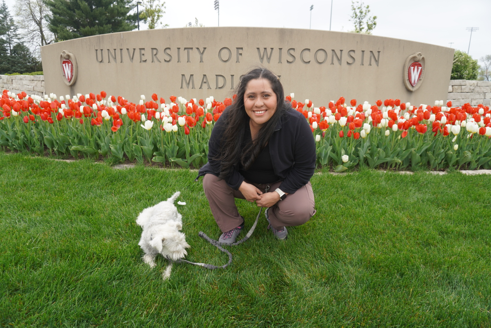

About Me

I am an Information Science student at the University of Wisconsin–Madison, pursuing a Bachelor of Science in Information Science with a Certificate in Digital Studies. I will graduate in May 2026.
My academic interests focus on human-centered computing, including human-computer interaction, robotics, accessibility, and human–AI interaction. I am especially interested in how people interact with intelligent systems and how technology can be designed to support trust, learning, and inclusion.
I have gained research experience working in robotics and human-robot interaction environments, as well as participating in international robotics initiatives such as RoboCup and educational outreach programs. These experiences have shaped my interest in designing technologies that are both technically effective and meaningful for users.
Beyond technical work, I enjoy communicating ideas through media and storytelling. I am passionate about creating accessible and engaging experiences that connect technology with real human needs.